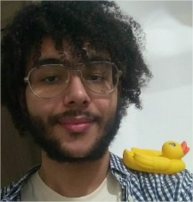
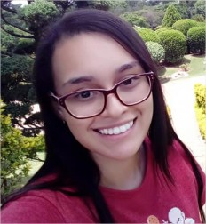
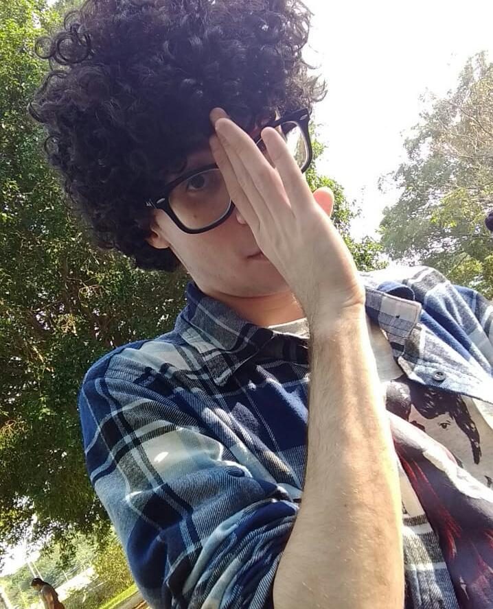
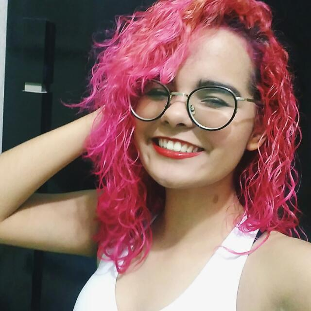
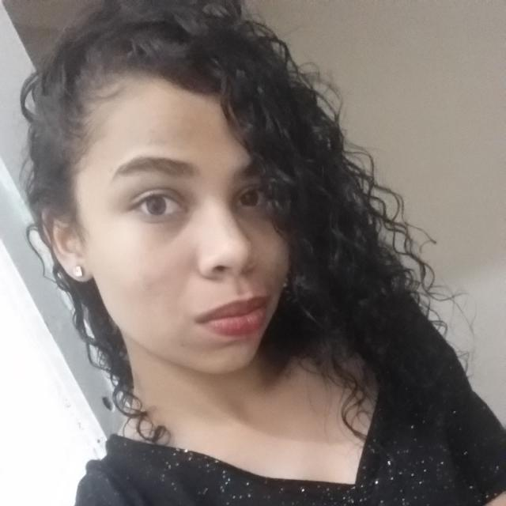

Sobre nós
Companhia FROOKIE foi formada por Anna, Beatriz, Tomás, Victoria e Willyan, alunos de Desenvolvimento de Sistemas da ETEC Dra Ruth Cardoso. Tanto esse website quanto o conceito desse café fazem parte de um projeto do curso, ministrado pelos professores (DENISE APARECIDA OLIVEIRA DA SILVA, DANIELA TERESA ROSSIGNOLI UEBELE, NATHALIA BIELSKI TAVARES, FRANCIS AKEMI NITTO SIMÕES, ROSELI FERNANDES ROCHA). O objetivo do projeto é fazer os alunos simularem vivências como empreendedores de um pequeno negócio, com total responsabilidade por todos os aspectos de seu comércio, e, quem sabe, levar o negócio adiante.
Sobre os autores
Willyan Ribeiro Brigatto
A refeição favorita de Willyan é o café da tarde, especiamente se acompanha bolo. Ele tem 19 anos, mora em São Vicente e adora palavras.
Victória Cabral Quintério
Gosta de cappuccino,mas se tiver um bolo de cenoura com cobertura de chocolate... que combinação! 18 anos, mora na Praia Grande e é geek
Tomás Moraes Soares
Há um ano, descobriu seu apreço por duas bebidas maravilhosas: cappuccino gelado - de preferência sem chantilly - e um cafézinho com licor de menta ou de chocolate. Um bolo de nozes ou red velvet também sempre cai bem. 18 anos, mora em São Vicente e é amante das artes - especialmente música e cinema.
Anna Carolina Cavalheiro de Souza
Apaixonada por mocaccino, acredita que não há nada melhor do que um pedaço de bolo de chocolate com canela pela manhã. Tem 17 anos, mora em São Vicente e ama literatura.
Beatriz Harue Aquino Soares de Souza Lima
Ama leite com chocolate e uma boa tapioca de fim de tarde. De preferência, bem recheada. Tem 17 anos, mora em São Vicente e ama ouvir música.